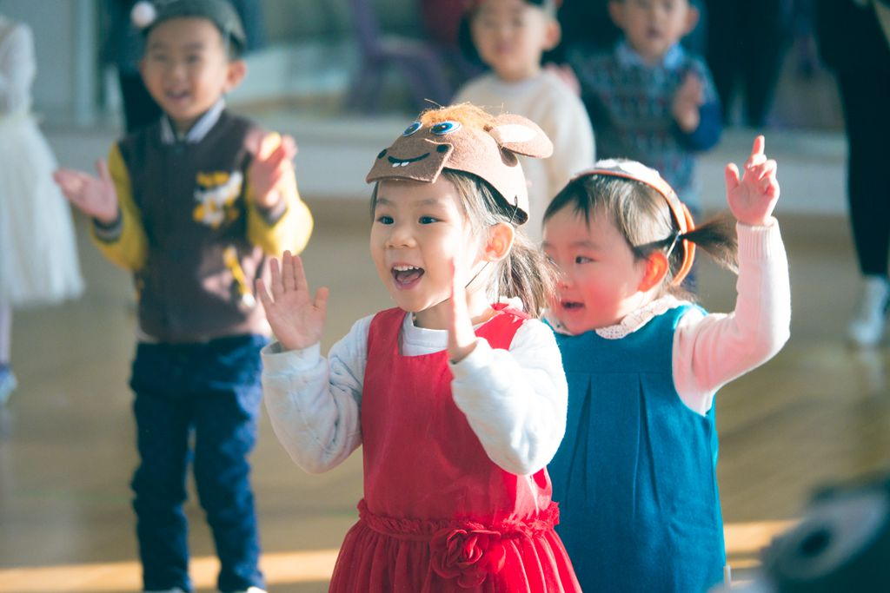

喵妈出院后，终于又开始送喵去幼儿园了。
每天的幼儿园之路是这样开始的。
06:20
开始吃早饭。
06:50
叫喵起床，穿衣服。冬天会很难，现在天亮得早，就好了很多。
Hello Kitty闹钟响起，抱着奇奇腻乎一会儿。伸手让爸爸妈妈拉起来，坐在被窝里，开始半自助穿上衣，自己穿裤子，爸爸妈妈帮忙掖一下衣服，最后自己穿好袜子和鞋。
这里的关键就是，一定要在这个过程中穿完所有衣服和鞋，否则临出门时会特别磨蹭，耽误更多时间。
07:10
穿完衣服，达到披上外套就能出门的状态。喝牛奶，吃鸡蛋，吃得不多，等到了幼儿园再正式吃，在这段时间里，爸爸或妈妈去把车开到楼下。
07:30
下楼，上车。这个过程总是要各种磨蹭，比如：
忘带玩具啦。
突然要拉臭啦。
不要梳头，非要换发卡啦，等等不一而足。
08:00
一路上手机连蓝牙喇叭放歌，车厢里回荡着TFBoys，穿越过爆堵的环路，就到了幼儿园附近。
因为幼儿园门口送孩子的车太多，每次就停在路边，下车开始向幼儿园奔去。
状态好的时候，妈妈拉着手，两人像小兔子一样颠儿得很快，可要是状态不好，就只能爸爸高高着了。
每次到幼儿园门口，会摸摸门口巨大的槐树，关心一下树皮破的地方怎么还不好。
在门口，向看门爷爷问好，向门口的园长老师问好。
如果到得早的话，在操场上骑会儿三轮车、拍会儿拍球，直到操场上大喇叭的歌声停止。
进到教室，爬上3楼，自己脱衣服，和带来的小玩具一起放到柜子里。经常会有其他小朋友的家长夸奖喵，能自己的事情自己做。这也是喵妈坚持的功劳啊，我以前就经常嫌麻烦，直接帮她脱大衣。
收拾好衣服，如果有好朋友也来了，就会一起手拉手进教室。
打开教室门，老师就会走过来：“小喵来啦，跟家人再见吧。”
回收告别后，喵和小朋友们去洗手，透过洗手间的玻璃，还会和我们再告别一次。
每次告别都是很兴奋地挥手，再没有一年前的哭天喊地。
下一篇写写记忆中的春游。